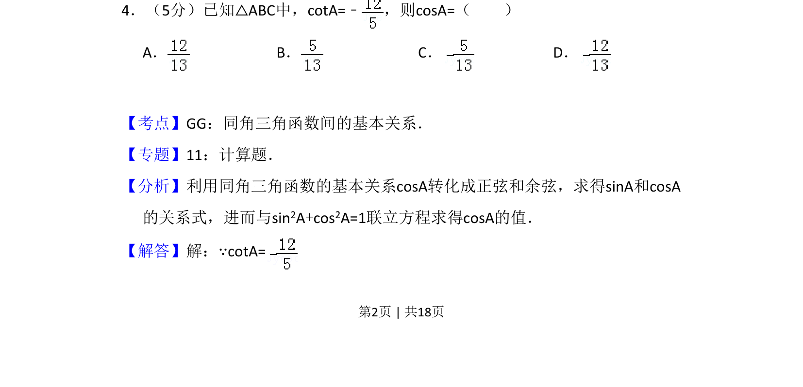
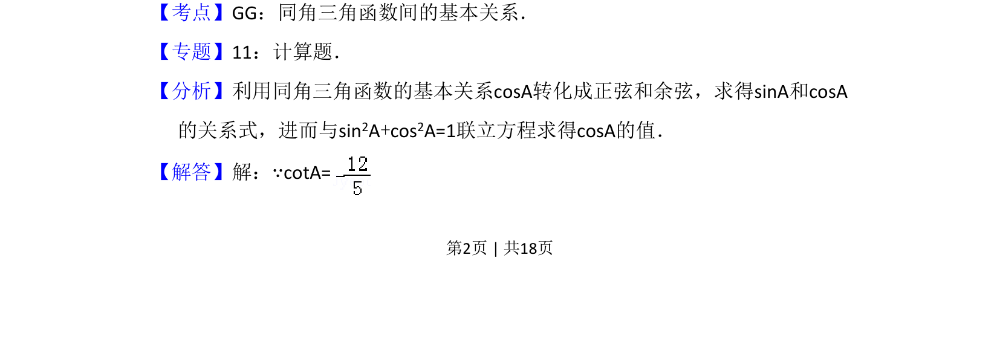
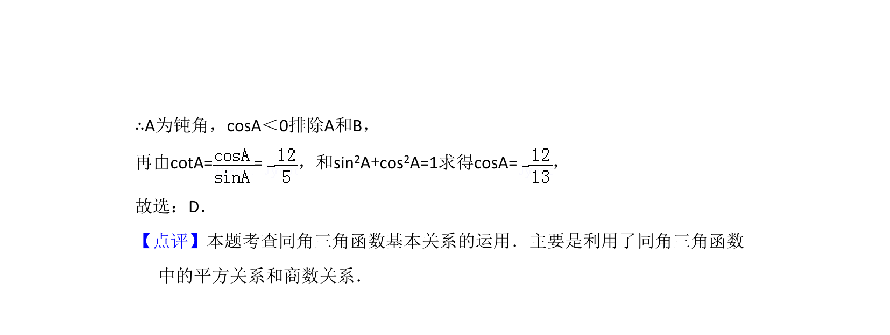

考点：同角三角函数基本关系 正弦 余弦 余切
同角三角函数基本关系
正弦
余弦
余切

利用同角三角函数基本关系，由余切值求解余弦值，涉及符号判断与方程联立。


📄 原 PDF 第 2 页：素材/真题/吉林/2008-2024·（吉林）数学高考真题/2009年高考数学试卷（文）（全国卷Ⅱ）（解析卷）.pdf
素材/真题/吉林/2008-2024·（吉林）数学高考真题/2009年高考数学试卷（文）（全国卷Ⅱ）（解析卷）.pdf